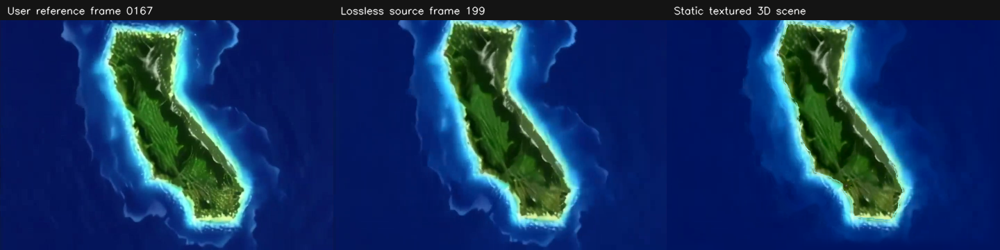
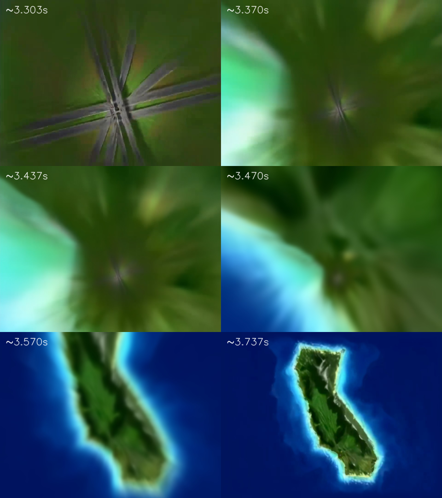
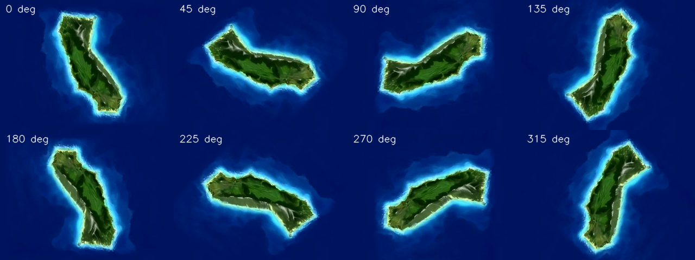
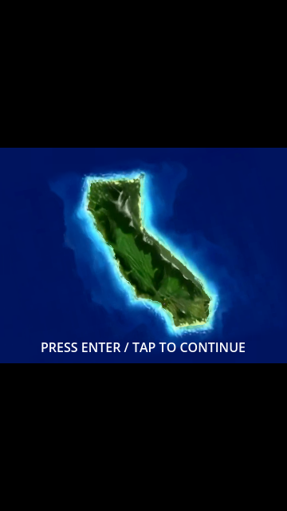
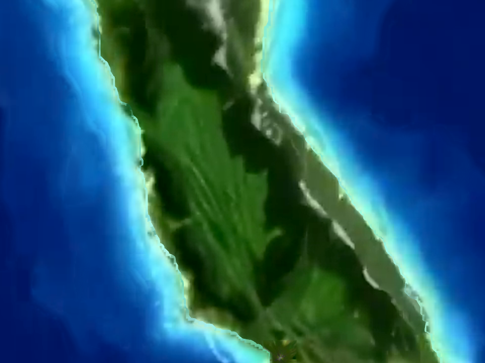

Wave animation is disabled. Base colors come from the original video. Visual approval is pending.

The two references depict different video instants. The mesh uses lossless native frame 199. Outer wave bands are separated for later animation.
Captured from the exported browser, with original wall-clock timing. No offline video/live compositing.




Editable source: art/source/island_intro/ocean-color/ocean-color.ora. Faint diffuse water variation remains after the approximate wave separation.